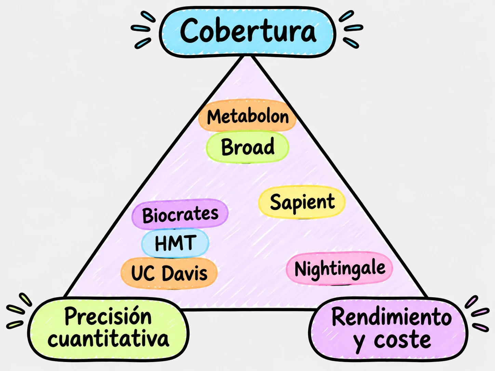
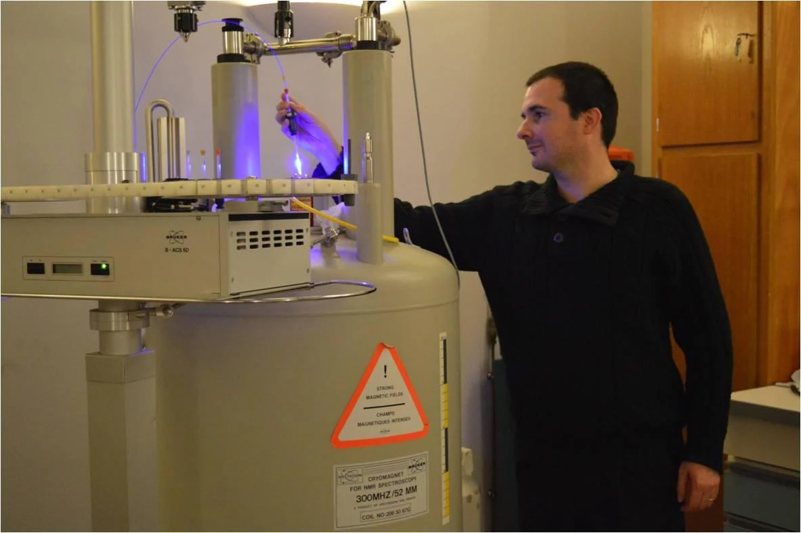
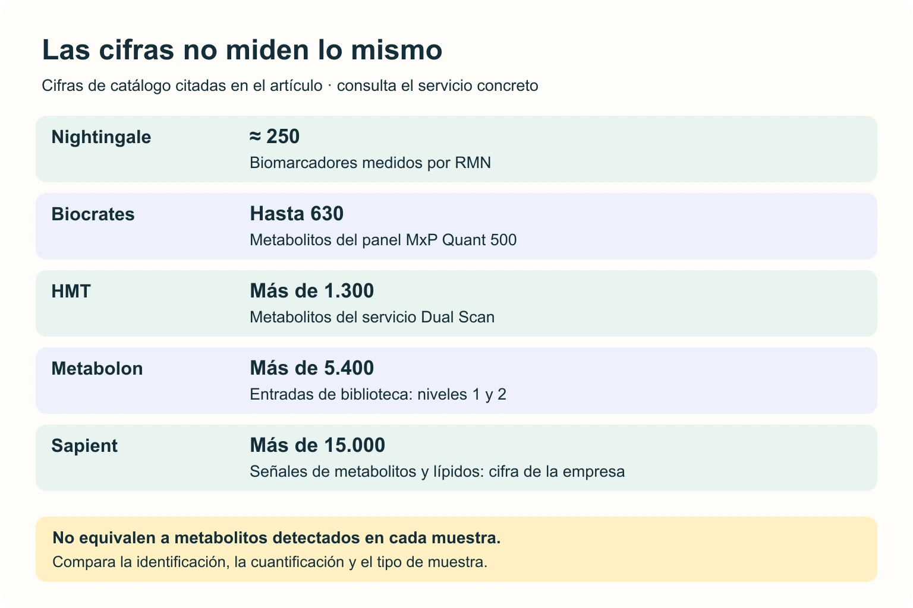

Cómo elegir una plataforma de metabolómica entre siete proveedores: tres compromisos y ninguna opción que lo vea todo.
Elegir una plataforma de metabolómica se parece poco a elegir un proveedor en cualquier otra área. No hay una opción mejor que las demás, porque ninguna captura el metaboloma completo. Tenemos metabolitos que van desde lípidos grandes e hidrofóbicos hasta ácidos orgánicos pequeños, polares y a veces volátiles, y no existe una técnica que los mida todos igual de bien ni se pueden, de momento, comparar entre ellas de forma directa. Así que la pregunta útil no puede ser «¿cuál es la mejor?», sino que la debemos transformar en una más utilitaria: «¿qué necesito ver?».
En los últimos diez años la metabolómica ha pasado de ser casi artesanal (dependía mucho de la mano de cada laboratorio) a convertirse en una industria de servicios bastante estandarizada. Y ese mercado se ha repartido según tres compromisos que no se pueden maximizar a la vez: la cobertura (cuántos metabolitos se ven), la precisión cuantitativa (lo exacto que es cada número) y el rendimiento y el coste (cuántas muestras al día y a qué precio). Cada proveedor ha elegido su vértice del triángulo. En un futuro post hablaré de lo que cuesta la metabolómica, pero hoy quiero repasar las principales plataformas y para qué pregunta encaja cada una.

Nightingale: plataforma de metabolómica para grandes cohortes
Nightingale Health usa resonancia magnética nuclear de protones (RMN). A diferencia de la espectrometría de masas, la RMN no destruye la muestra y apenas necesita prepararla, lo que evita los errores de extracción y los efectos de matriz. Su ventaja real no está en el espectrómetro (un Bruker estándar), sino en el software que convierte señales solapadas en concentraciones.
Mide unos 250 biomarcadores y esa es su principal crítica. Creo que la crítica no entiende su propósito. Para mí, no es una herramienta para descubrir moléculas nuevas, sino para fenotipar la fisiología. Su fuerte son las lipoproteínas (14 subclases, cada una con su colesterol, triglicéridos y fosfolípidos), junto con apolipoproteínas, ácidos grasos, aminoácidos, cuerpos cetónicos y un marcador de inflamación crónica, GlycA. Y da concentraciones absolutas, comparables entre estudios y entre décadas. Necesita 100 µL de suero o plasma y el precio por muestra baja mucho con el volumen, aunque para grupos académicos hay un pedido mínimo de 10.000 € (así que un piloto de 100 muestras sale, como poco, a 100 € cada una). Su límite es la sensibilidad: no ve nada en concentraciones nanomolares, como hormonas o vitaminas.

Metabolon: verlo todo, en relativo
Metabolon es una plataforma de metabolómica situada en el extremo opuesto: medir todo lo que se pueda con la máxima sensibilidad. Es la referencia en metabolómica no dirigida y cada muestra pasa por varios métodos de cromatografía líquida acoplada a espectrometría de masas (cuatro en su descripción habitual) para cubrir compuestos hidrofílicos, lipofílicos y polares. Su verdadera ventaja, más que los instrumentos, es una biblioteca de más de 5.400 entradas que combina identificaciones de nivel 1 y anotaciones de nivel 2. No todas las entradas tienen un estándar auténtico, así que conviene pedir el nivel de confianza de cada resultado.
Por ejemplo, tenemos lípidos complejos, xenobióticos (fármacos, café, pesticidas), metabolitos de la microbiota y moléculas de señalización. El precio es de servicio premium, claramente por encima de la RMN, y los datos son semicuantitativos, es decir, áreas de pico normalizadas, no concentraciones. Perfecto para descubrir, poco práctico para la clínica sin una validación posterior. Ese salto requiere validar los biomarcadores, como expliqué en otro post.

Biocrates: el kit que da lo mismo en dos laboratorios
Biocrates atacó el problema de la reproducibilidad de la espectrometría de masas con kits: placas de 96 pocillos con los estándares internos ya pipeteados. Su kit MxP Quant 500 cuantifica hasta 630 metabolitos en concentraciones absolutas. Tiene dos ventajas que lo distinguen: solo necesita 10 µL de plasma (lo que lo hace atractivo para estudios en ratones o con muestras neonatales escasas) y su reproducibilidad (un ensayo en 14 laboratorios mostró una reproducibilidad con coeficiente de variación medio del 14,3 %), algo que en espectrometría de masas ha costado mucho conseguir.
Plataformas de metabolómica especializadas
También tenemos plataformas que no compiten en todo, sino en un nicho. HMT, una empresa japonesa, se centra en los metabolitos pequeños, polares y con carga (ATP, nucleótidos, intermediarios del ciclo de Krebs) que salen demasiado rápido de las columnas habituales. Combinan electroforesis capilar y cromatografía líquida acopladas a espectrometría de masas (más de 1.300 metabolitos en su servicio Dual Scan). Ideal para estudiar el metabolismo energético.
Otra es Sapient, que intenta romper el compromiso entre rapidez y profundidad con cromatografía líquida rápida. Según la empresa, puede procesar miles de muestras al día y capturar más de 15.000 señales de metabolitos y lípidos por muestra. Esa cifra incluye señales conocidas y nuevas; no equivale a 15.000 identificaciones confirmadas. Su servicio apunta a los biobancos.
Y no podemos olvidar los centros académicos, que también tienen su hueco: el Broad Institute es fuerte en lipidómica y diabetes, y el West Coast Metabolomics Center de UC Davis se ha especializado en cromatografía de gases, que es algo así como el caballo de batalla olvidado (excelente para azúcares, esteroles y ácidos grasos libres) a precios muy ajustados.
Qué plataforma de metabolómica elegir según tu estudio
Si tuviera que resumirlo en una tabla, sería esta:
| Si tu estudio es… | Mira hacia… | Porque… |
|---|---|---|
| Epidemiológico, con miles de participantes | Nightingale | Permite medir grandes cohortes y facilita la comparación con los datos de RMN de UK Biobank |
| Búsqueda de biomarcadores nuevos (100-500 muestras) | Metabolon o Sapient | Hay que pescar con red amplia. La elección depende de la identificación disponible, la cobertura y el rendimiento de cada servicio |
| En ratones o con muestras pediátricas escasas | Biocrates | 10 µL bastan para un perfil profundo |
| De cáncer o de metabolismo mitocondrial | HMT | Ve el ciclo de Krebs y los nucleótidos que otras plataformas miden mal |
| Con presupuesto académico ajustado | UC Davis | Cromatografía de gases robusta para el metabolismo central |
Ahora bien, con dos matices. Las cifras de cobertura no son comparables entre sí y es importante tenerlo en cuenta: 250 biomarcadores absolutos, 630 metabolitos cuantificados, 5.400 anotables y 15.000 metabolitos y lípidos miden cosas distintas, y un metabolito en relativo no es una concentración. Por ello, cambiar de plataforma a mitad de un estudio longitudinal es un problema serio, porque los datos relativos de una no se traducen directamente a los de otra.

Mi humilde opinión
La metabolómica ha dejado de depender de l@s técnic@s de laboratorio y eso ha hecho más por la reproducibilidad del campo que muchos artículos metodológicos. No obstante, seguimos teniendo la problemática de cómo se elige la plataforma. En la práctica, muchas veces la decisión no sale de la pregunta biológica, sino de lo que usó el grupo de al lado, de lo que cabe en el presupuesto o de la cifra más grande del catálogo. Y las cifras grandes venden: «15.000 metabolitos por muestra» suena mucho mejor que «250 biomarcadores absolutos», aunque para un estudio epidemiológico lo segundo sea bastante más útil y reproducible.
Elegir una plataforma de metabolómica inadecuada cuesta caro. Las muestras de una cohorte son finitas. Cada alícuota que se descongela es una alícuota que no vuelve y en biobancos con años de seguimiento no hay forma de repetir la extracción de sangre de hace una década. Si gastamos esas alícuotas en una plataforma que no ve lo que necesitábamos, hemos perdido algo más que dinero. Quien haya intentado cruzar metabolitos entre dos cohortes medidas en plataformas distintas sabe, además, que la armonización posterior es lenta, parcial y llena de decisiones discutibles.
Por lo tanto, eso lleva a la responsabilidad de quien diseña el estudio. Externalizar la medición no elimina la responsabilidad sobre los datos. Los proveedores entregan matrices ya procesadas, normalizadas y, muchas veces, con los valores perdidos imputados con criterios propios que rara vez se leen con detalle (en ocasiones, ni siquiera existen esos detalles), pero si esos criterios cambian un resultado, la firma del artículo y la reputación siguen siendo nuestras y no de la empresa.
Antes de elegir una plataforma de metabolómica
Así que, si vais a encargar metabolómica, esto es lo que haría yo:
- Pedir los datos brutos y el informe de identificación. Saber con qué nivel de confianza se ha identificado cada metabolito, cómo se han normalizado las señales y cómo se han imputado los valores perdidos, porque cada uno de esos pasos puede mover los resultados.
- Aleatorizar el orden de las muestras e incluir controles de calidad. Repartir casos y controles entre placas y lotes, y meter muestras de control (un pool de todas ellas, por ejemplo) a intervalos regulares. Si se produce un efecto de lote y se confunde con la exposición, es casi imposible de deshacer después por muchos apaños estadísticos que usemos.
- Guardar alícuotas para validar. Lo que se descubra con una plataforma no dirigida habrá que confirmarlo con una cuantificación absoluta, y para eso hace falta muestra.
- No cambiar de plataforma sin un puente. Si un estudio longitudinal tiene que cambiar de proveedor, medir un subconjunto de muestras en las dos plataformas y usarlo para calibrar una frente a la otra.
Creo que estaría muy bien que los proveedores compitieran sobre un terreno común, con comparaciones abiertas frente al mismo material de referencia (el plasma de referencia del NIST ya existe y se usa) y publicando qué metabolitos ven, con qué precisión y con qué nivel de identificación, en lugar de seguir compitiendo con cifras de cobertura que no se pueden comparar. Mientras tanto, elegir una plataforma de metabolómica seguirá dependiendo de que quien encarga sepa qué preguntar.